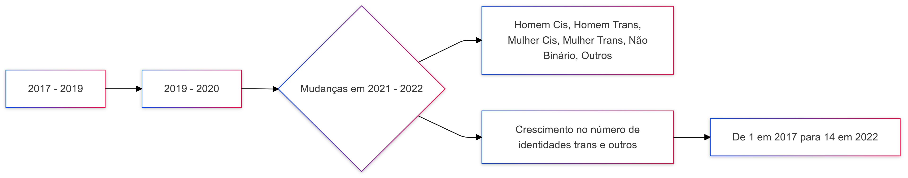
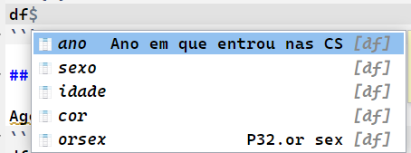

Analisando sexualidade e gênero do alunado
Hands-on na base de dados do PET
Programa de Educação Tutorial - Ciências Sociais
22 de janeiro de 2025
Prêambulo
Breve conxtetualização
- O conteúdo destes slides foram preparados a partir da comunicação de pesquisa das colegas petianas Ingrid Silva Sjobom; Maria Luiza Monteiro Vicente; Laura Farah Feitoza para o SIICUSP de 2023. Questões:
Por meio dos dados do PET, como abordar teoricamente o binarismo de gênero e a heterosexualidade compulsória no curso de Ciências Sociais?
Como explicar o aumento no número aumento de pessoas que fogem da matriz heterossexual e da monossexualidade?

Reprodutibilidade
Eu não tenho acúmulo teórico para discutir as questões postas pelas colegas, tampouco subsídio o suficiente para conduzir uma discussão. Meu objetivo será contribuir para a reprodução do estudo das colegas, e o seu conseguinte aprofundamento.
A reprodutibilidade exige que pesquisadores compartilhem métodos, dados e códigos, promovendo a transparência no processo do fazer científico.
A reprodutibilidade facilita o compartilhamento de conhecimentos e métodos entre cientistas e a sociedade
Sem reprodutibilidade, os resultados podem ser considerados espúrios ou irrelevantes.
Mão na massa
Preparação
Criar uma conta nos seguintes serviços:
Carregando as bibliotecas
- Instalar bibliotecas
install.packages("nome da biblioteca")
- Carregar as bibliotecas
Bibliotecas são como as extensões do Google Docs. Elas permitem novas funcionalidades e otimizam nosso código/análise.
Lendo os arquivos
Há muitas formas de ler arquivos no R.
- Direto de uma Google Sheet, com a função
read_sheet
- Direto do diretório de trabalho, localizando o documento
Neste caso, o arquivo que contém os dados se chama bd_2006_2018.xlsx e está na pasta “dados”. A função read_excel, do pacote readxl, lê arquivos que terminam com .xlsx, .xls e outros.
Para ler um arquivo .csv, por exemplo, teríamos de usar a função readr::read_csv2().
No nosso caso, utilizaremos o seguinte código:
Nomeamos o objeto que “salva” nossa base de dados como df_raw. E o que isso significa?
São algumas convenções utilizadas na área de dados. DF vem de dataframe, ou seja, “quadro de dados”. Raw é a tradução livre para “cru”.
Isso pois nossos dados ainda estão crus, ou seja, brutos.
Organizando a base de dados
Selecionando variáveis
Inicialmente, vamos selecionar quais são as variáveis de interesse que vamos trabalhar. São elas:
- Ano de ingresso;
- Sexo;
- Idade;
- Cor;
- Orientação sexual.
Para vermos o que foi feito, podemos executar o seguinte código:
A tabela
| ANO_INGRESSO | P1.sexo | P2.idade | P3.cor | P32.orsex |
|---|---|---|---|---|
| 2017 | 1 | 22 | 1 | 3 |
| 2017 | 1 | 21 | 1 | 2 |
| 2017 | 1 | 23 | 3 | 2 |
| 2017 | 1 | 18 | 1 | 2 |
| 2017 | 1 | 49 | 1 | 2 |
| 2017 | 1 | 19 | 2 | 1 |
| 2017 | 1 | 19 | 1 | 1 |
| 2017 | 2 | 18 | 2 | 3 |
| 2017 | 1 | 21 | 2 | 9 |
| 2017 | 1 | 21 | 3 | 2 |
Modificando o nome das colunas
Agora que já temos uma base de dados mais concisa, vamos modificar o nome das colunas para facilitar o acesso e leitura do código.
Para acessar uma coluna da base, utilizamos:
df$P32.orsex
Onde:
dfé a nossa base de dados;$é o símbolo que nos utilizamos para navegar “dentro” da base.
Se apertarmos TAB no nosso teclado, conseguimos ver as colunas disponíveis.
Para modificar o nome das colunas, utilizando a função rename do pacote dplyr
Com isso, vemos que os nomes agora estão diferentes.
Modificando o tipo das variáveis
Agora que temos as colunas nomeadas como gostaríamos, vamos modificar o tipo de variáveis.
df <- df |>
dplyr::mutate(
sexo = case_when(
sexo == 1 ~ "Masculino",
TRUE ~ "Feminino"
),
cor = factor(cor, levels = c(1, 2, 3, 4, 5),
labels = c("Branca", "Preta", "Parda", "Amarela", "Indígena")),
orsex = factor(orsex, levels = c(1, 2, 3, 4),
labels = c("somente homens", "somente mulheres", "ambos", "outros"))
)Tipos de variáveis
| Tipo | Descrição |
|---|---|
int |
Número inteiro, sem casas decimais. |
float |
Número de ponto flutuante, usado para representar valores decimais. |
double |
Similar ao float, mas com maior precisão para números decimais. |
char |
Representa um único caractere, como ‘A’ ou ‘9’. |
string |
Conjunto de caracteres, usado para representar texto. |
bool |
Tipo booleano, que pode ser true (verdadeiro) ou false (falso). |
number |
Representa qualquer valor numérico (inteiro ou decimal). |
Removendo NAs
- NA significa, geralmente, Not Available. Podem ser linhas vazias, por exemplo.
Para remover valores indesejados, utilizamos a função filter()do pacote dplyr.
Estatística descritiva básica
Distribuição de variáveis categóricas
Sexo
# A tibble: 2 × 3
sexo n perc
<chr> <int> <dbl>
1 Feminino 952 43.3
2 Masculino 1248 56.7Cor
Tabelas Cruzadas
- Ok, vimos como tirar a porcentagem dos valores. Mas, e se quiseremos algo mais atraente?
Podemos utilizar o código abaixo, junto da função flextable() do pacote flextable.
df |> count(sexo, cor) |>
mutate(
porcentagem = paste0(round((n / sum(n)) * 100, 1), "%")) |>
flextable::flextable() |>
set_caption(" Tabela cruzada de Sexo por Cor") |>
add_footer_lines("Elaborado por Artur Damião (2025), a partir dos dados do PET") |>
font(fontname = "Modern", part = "all")|>
fontsize(size = 16, part = "all") |>
align(align = "left", part = "all")Resultado:
Sexo
sexo | cor | n | porcentagem |
|---|---|---|---|
Feminino | Branca | 742 | 33.7% |
Feminino | Preta | 34 | 1.5% |
Feminino | Parda | 138 | 6.3% |
Feminino | Amarela | 37 | 1.7% |
Feminino | Indígena | 1 | 0% |
Masculino | Branca | 935 | 42.5% |
Masculino | Preta | 59 | 2.7% |
Masculino | Parda | 204 | 9.3% |
Masculino | Amarela | 44 | 2% |
Masculino | Indígena | 6 | 0.3% |
Elaborado por Artur Damião (2025), a partir dos dados do PET | |||
Sexo e Orientação Sexual
Sexo | Orientação Sexual | Frequência | Porcentagem |
|---|---|---|---|
Feminino | somente homens | 155 | 7% |
Feminino | somente mulheres | 34 | 1.5% |
Feminino | ambos | 135 | 6.1% |
Feminino | outros | 11 | 0.5% |
Feminino | 617 | 28% | |
Masculino | somente homens | 57 | 2.6% |
Masculino | somente mulheres | 271 | 12.3% |
Masculino | ambos | 55 | 2.5% |
Masculino | outros | 11 | 0.5% |
Masculino | 854 | 38.8% | |
Elaborado por Artur Damião (2025), a partir dos dados do PET | |||
Ambas as tabelas foram feitas com o pacote flextable() que, como podemos ver, é altamente customizável.
Visualização gráfica
Para fazermos gráficos, temos o pacote ggplot2.
df |>
count(ano, sexo) |>
group_by(ano) |>
mutate(perc = n / sum(n) * 100) |>
ggplot(aes(x = factor(ano), y = perc, color = sexo, group = sexo)) +
geom_line(size = 1.1) +
geom_point() +
labs(title = "Variação da Distribuição de Sexo ao Longo dos Anos",
subtitle = "(2006-2017)",
caption = "Elaborado por Artur Damião (2025), a partir dos dados do PET",
x = "Ano",
y = "Porcentagem (%)",
color = "Sexo") +
theme_classic()Ano e orientação sexual
library(ggplot2)
library(dplyr)
library(viridis) # Paleta de cores colorblind
df |>
filter(!is.na(orsex) & orsex != "outros") |>
count(ano, orsex) |>
group_by(ano) |>
mutate(perc = n / sum(n) * 100) |>
ggplot(aes(x = factor(ano), y = perc, color = orsex, group = orsex)) +
# Linhas e pontos personalizados
geom_line(size = 1.2, alpha = 0.8) +
geom_point(size = 3, shape = 21, fill = "white", stroke = 1.2) +
# Adicionando labels diretos nos pontos finais das linhas
geom_text(aes(label = paste0(round(perc, 1), "%")),
data = . %>% filter(ano == max(ano)),
hjust = -0.1, size = 5, fontface = "bold") +
# Paleta de cores daltônica
scale_color_viridis_d(option = "plasma", end = 0.9) +
# Títulos e eixos
labs(
title = "Variação da Distribuição de Orientação Sexual ao Longo dos Anos",
subtitle = "(2014-2017)",
caption = "Elaborado por Artur Damião (2025), a partir dos dados do PET",
x = "Ano",
y = "Porcentagem (%)",
color = "Orientação Sexual"
) +
# Tema customizado
theme_classic(base_size = 16) +
theme(
plot.title = element_text(face = "bold", size = 20, hjust = 0.5),
plot.subtitle = element_text(size = 16, hjust = 0.5, color = "gray30"),
axis.title = element_text(size = 16, face = "bold"),
axis.text = element_text(size = 14),
legend.title = element_text(face = "bold"),
legend.position = "top",
panel.grid.major.y = element_line(color = "gray80", linetype = "dashed")
)```
Por enquanto é isso.
Qualquer coisa, estou à disposição.

Slides por Artur Damião, feito com Quarto. Código disponível no GitHub.